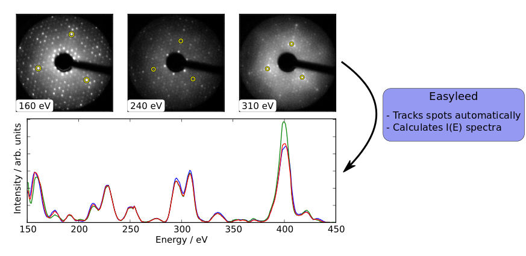

Intro¶
The intensity of diffraction maxima in low energy electron diffraction patterns changes with the energy of the incident beam. By varying the beam energy and recording the intensity of the maxima at each step, structural information about the analyzed surface can be obtained. The purpose of the EasyLEED program is to facilitate the extraction of intensity-energy spectra from the experimental images.
The user selects the spots he wants to track and the software then tries to automatically track the spots throughout all beam energies. An algorithm to determine the position of a spot in an image from the intensity information is combined with a dynamical model of the spot movement between successive beam energies to yield superior tracking performance.
{kind=link}
Quickstart¶
EasyLEED is available from PyPI and can thus by installed by executing the following command in a console.
$ pip install easyleed
Once installed you can launch the program with the command
$ easyleed
Open a series of diffraction images at successive energies and click on a diffraction spot you want to track. Click run and of you go!
Documentation¶
Support & Contributing¶
If you have problems or have suggestions of how to improve the software, please write us an email or open an issue on Github.
We would also be very happy about direct contributions that enhance and extend the functionality of EasyLEED. Simply fork the project on Github, hack away, and then open a pull request.
Citing EasyLEED¶
If our software is useful to you, feel free to cite it: The algorithm on which the I(E)-spectra extraction relies is described in the following article (Download Bibtex-File):
- Mayer, H. Salopaasi, K. Pussi, R.D. Diehl. A novel method for the extraction of intensity-energy spectra from low-energy electron diffraction patterns. Comput. Phys. Commun. 183, 1443-1447 (2012)
The paper is available at the publisher’s website. If you are unable to access the paper at your institution, feel free to contact us via email for a preprint.
Contributors¶
Development of EasyLEED was started by Andreas Mayer while working in Renee Diehl’s lab (Penn State). Hanna Salopaasi has contributed to the user interface while working in Katariina Pussi’s lab (Lappeenranta University of Technology). Further UI and core improvements were contributed by Nicola Ferralis (Massachusetts Institute of Technology).